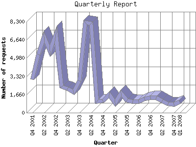

The Quarterly Report shows total activity on your site for each quarter of a
year. Remember that each page hit can result in several server requests as the
images for each page are loaded.
Note: Most likely, the first and
last quarters will not represent a complete quarter's worth of data, resulting
in lower hits.

| Quarter | Number of requests | Number of page requests | |
|---|---|---|---|
| 1. | Q1 2008 | 977 | 395 |
| 2. | Q4 2007 | 755 | 478 |
| 3. | Q3 2007 | 804 | 520 |
| 4. | Q2 2007 | 1,069 | 693 |
| 5. | Q1 2007 | 1,362 | 848 |
| 6. | Q4 2006 | 1,362 | 865 |
| 7. | Q3 2006 | 1,267 | 774 |
| 8. | Q2 2006 | 1,048 | 685 |
| 9. | Q1 2006 | 1,043 | 695 |
| 10. | Q4 2005 | 1,128 | 752 |
| 11. | Q3 2005 | 1,771 | 1,296 |
| 12. | Q2 2005 | 907 | 663 |
| 13. | Q1 2005 | 1,670 | 1,033 |
| 14. | Q4 2004 | 1,089 | 674 |
| 15. | Q3 2004 | 1,046 | 615 |
| 16. | Q2 2004 | 8,131 | 7,727 |
| 17. | Q1 2004 | 8,209 | 6,973 |
| 18. | Q4 2003 | 2,917 | 1,415 |
| 19. | Q3 2003 | 1,879 | 704 |
| 20. | Q2 2003 | 2,205 | 906 |
| 21. | Q1 2003 | 2,355 | 986 |
| 22. | Q4 2002 | 7,151 | 2,991 |
| 23. | Q3 2002 | 5,605 | 1,597 |
| 24. | Q2 2002 | 6,901 | 1,857 |
| 25. | Q1 2002 | 5,304 | 1,307 |
| 26. | Q4 2001 | 3,030 | 982 |
Most active quarter Q2 2004 : 7,727 pages sent.
Quarterly average: 1,478 pages sent. 2,730 requests handled.
This report was generated on February 10, 2008 02:18.
Report time frame December 10, 2001 23:14 to February 10, 2008 01:40.